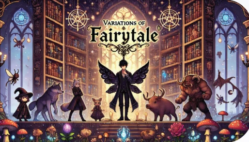
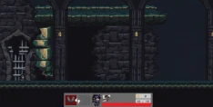

숲의 몬스터가 사냥꾼 전투를 예고합니다.
백설공주 편의 숲과 사냥꾼 전투를 맡았습니다. 숲에서 익힌 회피를 보스전의 반격으로 이어 가도록 적의 움직임과 공격 순서를 정했습니다.

전투 설계
숲에서는 원거리 공격을 하는 꽃과 돌진하는 늑대가 서로 다른 움직임을 요구합니다. 중간보스 사냥꾼은 활 공격과 맹수 소환을 조합합니다. 플레이어가 공격 방향을 읽고 피한 뒤 다시 접근할 타이밍을 찾는 전투로 설계했습니다.

기획과 제작
다섯 동화를 구상한 뒤 첫 프로토타입은 백설공주 편에 집중했습니다. 일반 스테이지 세 곳을 제작하고 사냥꾼 전투까지 구현했습니다. 일곱 난쟁이의 무작위 조합과 백설공주의 마법거울 패턴은 기획안에 담았습니다.
마을 상점에서 골드로 공격력과 체력을 강화하고, 탐험 중에는 회복 아이템으로 체력을 보충하도록 구현했습니다. 적의 출현 위치를 조정하면서 전투와 다음 탐험 사이의 난이도를 맞췄습니다.